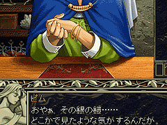
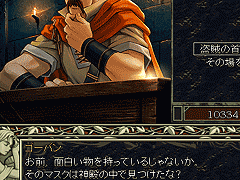
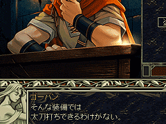
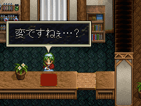
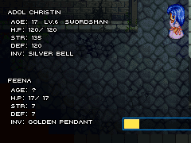
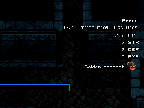
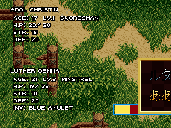
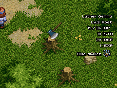

つまり、ダルク＝ファクトが着ているクレリアのマントは「ミラー」の効果を反射するようです。一方の、アドルが「ミラー」の効果を無効化できた理由はちょっと分かりません。

目次 > ゲームについて > 日本Falcom 攻略 > Ys > 情報
らんの眼
Ys(イース) Ys Eternal(VE)/Ys Complete
| 概要 | 情報 | ボス戦 |
| 敵キャラ一覧 | アイテム一覧 | 攻略チャート |
| 地図 | ダウンロード | イースの本 |
| 経験値表 | 地名一覧 | タイムアタック |
| ETERNAL / Complete 比較 | キャラクター一覧 | |
| Ys 攻略へ | 目次へ戻る |
| [ 1 ] [ 2 ] [ 3 ] [ 4 ] [ 5 ] [ 6 ] [ 7 ] [ 8 ] [ 9 ] |
| SILVER ARMER の持ち主 |
| 入手ルートは知りませんが、「SILVER ARMER」の持ち主は交換所にいるピムのようです。しかし、廃坑の第1 層で「SILVER ARMER」を入手後、彼に話しかけても自分の店から盗まれたものだと全く気づきません。 売り物に愛着が無いのでしょうか・・・。  |
| なぜ知ってる? |
| 「マスク オブ アイズ」を入手後で、まだニグティルガーを倒していない時に、盗賊の砦にいるゴーバンに話しかけると、「マスク オブ アイズ」の使い方を教えてくれます。しかも、それが神殿にあったことも知っているのですが、なぜそんなことまで知っているのでしょうか。  |
| ダームの塔へ入らせてもらえない |
| 銀の装備(SILVER SWORD、SILVER ARMER、SILVER SHIELD)を全て持っていないと、ゴーバンにダームの塔へ入る許可をもらえません。 この現象を見たい場合、「SILVER ARMER」だけを入手せずにヴァジュリオンを倒すといいでしょう。  |
| クレリアのマントの効果 |
| ダルク＝ファクトのいる場所で「ミラー」を使うと、ダルク＝ファクトの上に「REFLECT MAGIC(魔法を反射)」、アドルの上に「RESISTED!
(無効化)」と表示されます。 つまり、ダルク＝ファクトが着ているクレリアのマントは「ミラー」の効果を反射するようです。一方の、アドルが「ミラー」の効果を無効化できた理由はちょっと分かりません。 |
| ミラー使用による特殊なセリフ |
| 「ミラー」には、「ミラー」に映り込んだ全てのものを一定時間静止させる魔法がかかっています。そのため、町で「ミラー」を使うと、人々がその奇妙な体験に不思議がります。 特に、レアやフィーナといった重要キャラや、六神官の末裔であるルタ、ジェバ、ゴーバン、サラなどは、魔法に対する才能があるのか、かなり特殊なセリフを言ってくれます。また、フィーナは救出前と後でセリフが変化します。 さらに、人間以外にも効果があり、ゼピック村の桟橋で使うと、湖にいる魚がしゃべります。  |
| 護衛キャラのステータス |
| FEENA(フィーナ) AGE：? H.P：17 STR：7 DEF：7 INV：GOLDEN PENDANT フィーナの装備している「金のペンダント」はYs II で再度登場します。  (ETERNAL 版) Feena(フィーナ) Lv.1 T：158、B：84、W：56、H：85 HP：17 STR：7 DEF：7 EXP：0 装備品：Golden pendant (金のペンダント)  (Complete 版) LUTHER GEMMA (ルタ＝ジェンマ) AGE：21 LV.3 MINSTREL(吟遊詩人) HP：36 STR：10 DEF：20 INV：BLUE AMULET  (ETERNAL 版) Luther Gemma(ルタ＝ジェンマ) Lv.3 Poet(詩人) HP：36 STR：10 DEF：20 EXP：1 装備品：Blue amulet (ブルーアミュレット) ジェンマ家に伝わるお守り「ブルーアミュレット」を装備しているのはいいのですが、経験値が1 入っている(持っている?)のが気になります。夢遊病でさまよっている最中に凶暴化したピッガードでも倒したのでしょうか。  (Complete 版) |
| [ 1 ] [ 2 ] [ 3 ] [ 4 ] [ 5 ] [ 6 ] [ 7 ] [ 8 ] [ 9 ] |
| 概要 | 情報 | ボス戦 |
| 敵キャラ一覧 | アイテム一覧 | 攻略チャート |
| 地図 | ダウンロード | イースの本 |
| 経験値表 | 地名一覧 | タイムアタック |
| ETERNAL / Complete 比較 | キャラクター一覧 | |
| ページ上部へ | Ys 攻略へ | 目次へ戻る |